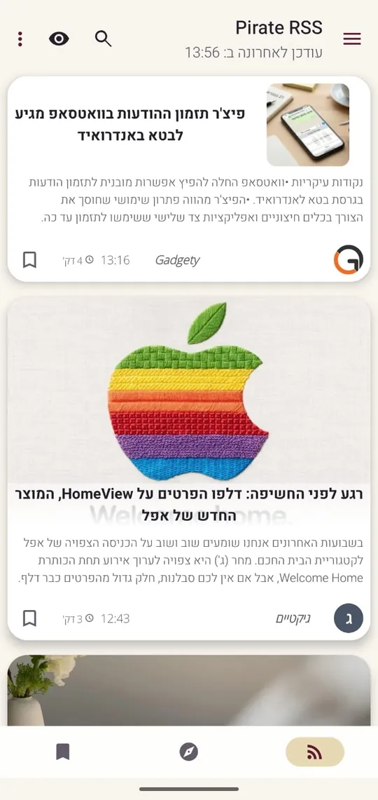
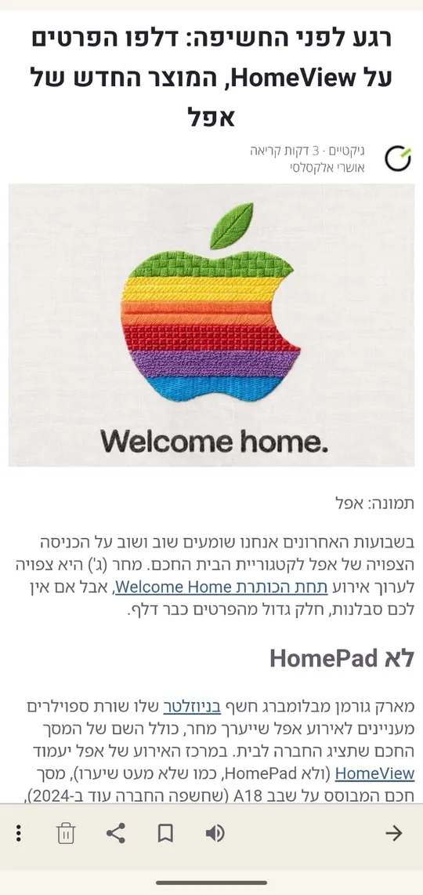
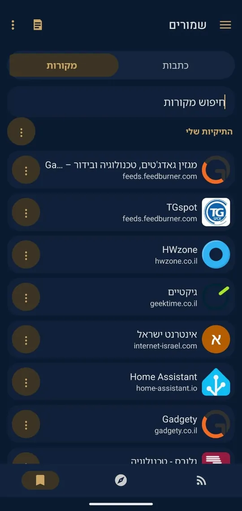
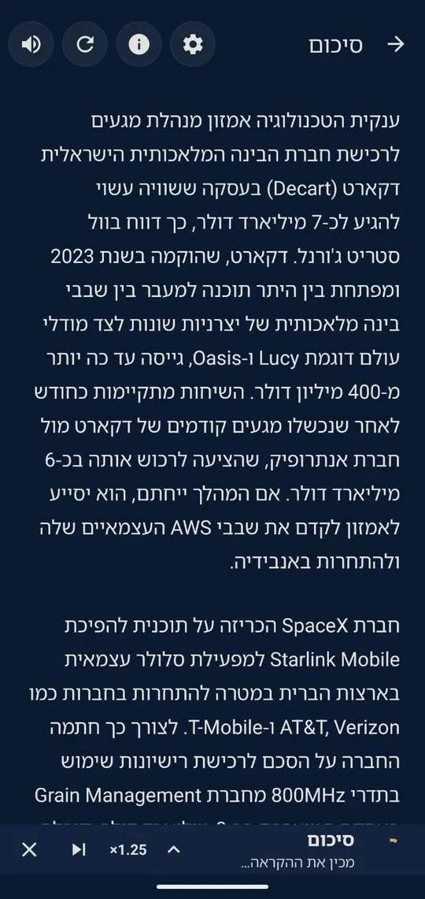
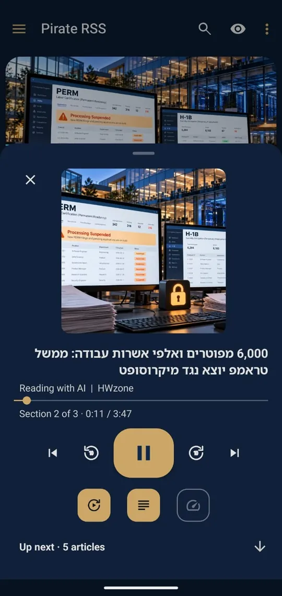
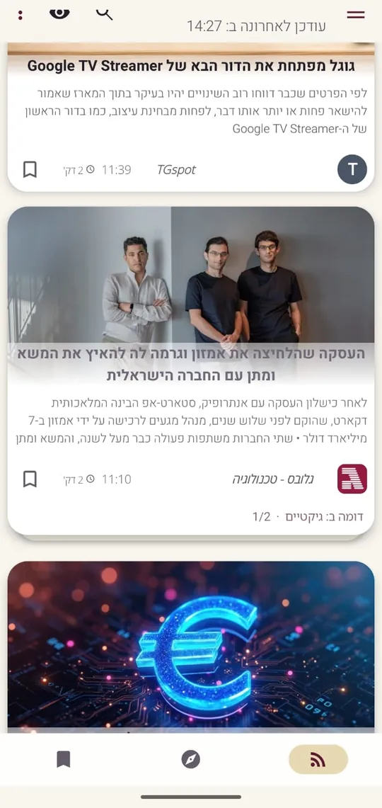
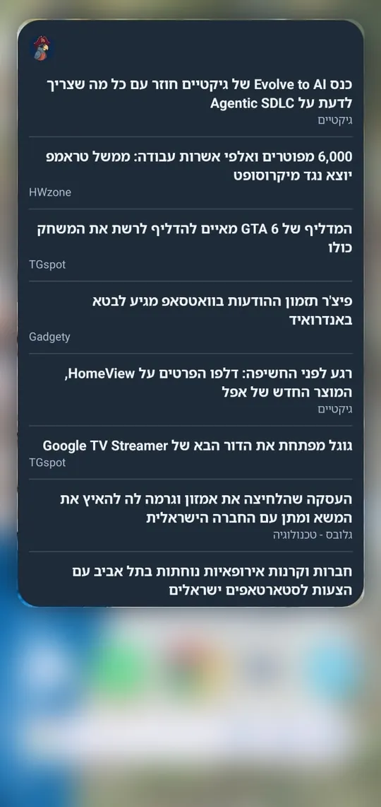

01
Одна лента для всех источников
Добавляйте сайты и блоги, раскладывайте их по папкам и находите новые источники через поиск.


Pirate RSS — читалка для тех, кто следит за множеством блогов и сайтов. Добавьте источники, откройте приложение, читайте. Бесплатно, с рекламой.
Скачать в Google Play
Большинство сайтов незаметно публикуют ленту: простой список своих последних статей. RSS-приложение собирает такие ленты со всех сайтов, которые вы добавили, и показывает их вместе, сначала самые новые.
Вместо того чтобы открывать десять вкладок и смотреть, что нового, вы открываете одно приложение. Вы решаете, какие сайты в нём будут, и видите именно их.
Добавляйте сайты и блоги, раскладывайте их по папкам и находите новые источники через поиск.
Текст статьи с изображениями, светлая и тёмная темы, поддержка текста слева направо и справа налево.


Краткая сводка последних статей из источников, которые вы выбрали.

Слушайте статью вслух, а следующие уже стоят в очереди. Управлять воспроизведением можно из уведомления.

Переводите статью на язык приложения и выбирайте способ перевода.

Умное сканирование (по желанию) собирает похожие статьи в одну стопку. Откройте её и выберите, что читать.

Настройки и сохранённые статьи копируются в облако. Или просто продолжайте как гость.
Заголовки на главном экране: из всех источников или из одного, который вы выберете.

Доступно на четырёх языках. Бесплатно, с рекламой.
Добавьте пару сайтов и посмотрите, подходит ли вам такой способ чтения.
Скачать в Google Play